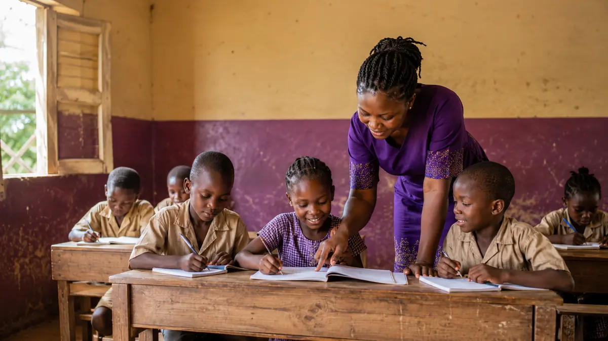
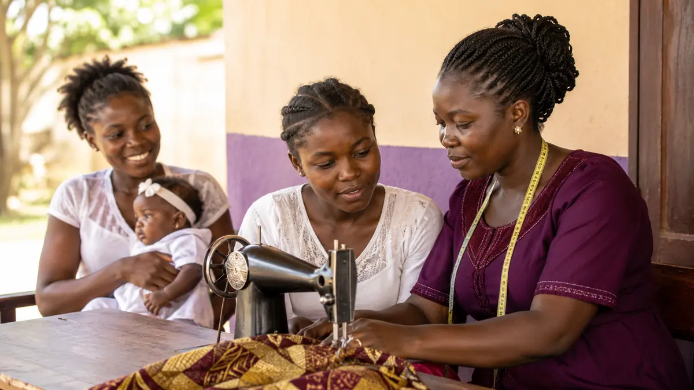

👧🏾
Children & Orphans
Protection, school support, care and pathways toward stability.
Fondation Grande Royale supports vulnerable children, young mothers, elderly people and families with care, education, skills and pathways toward greater independence.
FGR meets people where they are, responds to immediate needs, and helps create the conditions for a more secure and independent future.
Our work combines protection, education, health support, skills development and social inclusion.
Protection, school support, care and pathways toward stability.
Training, support, confidence and greater economic independence.
Dignified aging, connection, care and community participation.
Practical help, education and support that strengthens households.
Practical support designed to build safety, confidence and long-term opportunity.

FGR aims to help vulnerable children and young people access basic education, guidance and the confidence to imagine a more secure future.
Vocational training and practical skills can help young mothers and disadvantaged young people move toward income, stability and greater control over their future.

Fondation Grande Royale was named in honor of a beloved grandmother remembered for helping people whenever she could and wearing her heart on her sleeve.
Her example became the blueprint: love people, protect their dignity, and help whenever you can.
Stand with Fondation Grande Royale as it works to support vulnerable people in Cameroon through care, education, training and community-based support.